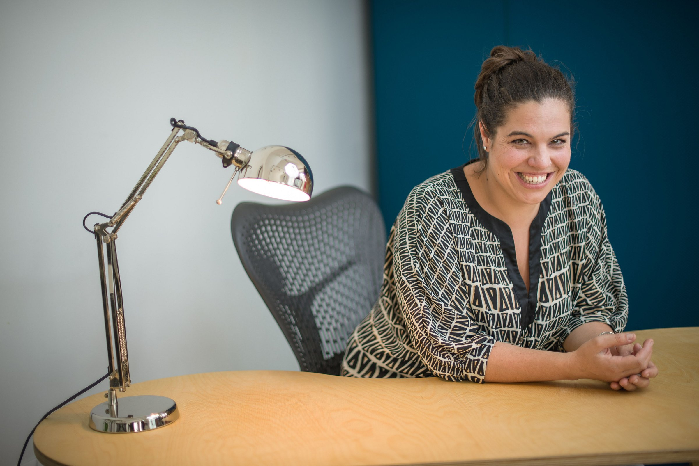

Hungary · remote and in person
Photo: Németh András Péter
I help people on a mission bring others along.
Bitcoin comes first for me, then environmental campaigns and tech for good. I'm Kitti Borissza, and for 15+ years I've built communities, communications and programmes for people trying to change something.
Tell me about your project
See the work ↓
Three kinds of work, one approach
-
1 Bring people together
Programmes, hackathons, cohorts and live sessions I've designed, co-hosted and facilitated, where people learn from each other and build together.
Where I've done it: WAC / We Are Museums · POW Lab · Data Café · Compass Data Stage · Hacker Paradise
See the work →
-
2 Tell the story
Communications strategy and hands-on social media, content, online communities and campaigns, across my whole career, for launches and for causes.
Where I've done it: agency brand communities · startup launches · campaigns for Greenpeace, Artemisszió and Tilos · a Tezos developer Discord · Circles Entropy's go-to-market
See the work →
-
3 Get it organised
Complex topics turned into plans with resources, timelines and next steps, then delivered: tested, measured and adjusted as we go.
Where I've done it: the EasyA × Tezos hackathon · Climate Game On's product development · TomorrowPeople's experiment cycles
See the work →
Featured work
Three projects, one for each kind of work. Each was a team effort, so each story says what the team did and what I did.
-
1 Bring people together
WAC / We Are Museums
2022 – 2024
Helping museums learn blockchain by building with it, across three seasons of calls, a hackathon and two Factory cohorts.
-
2 Tell the story
Climate Game On
Jan 2018 – May 2021
Turned a vague climate-data idea into a team, a competition win and a shipped app built with eight NGO partners.
-
3 Get it organised
EasyA × Tezos Hackathon, London
26–27 Nov 2022
A 36-hour hackathon in London with two organisations, many moving parts and one person keeping them connected on the Tezos side.
See all work →
Tell the story
Campaigns for causes
Communications and fundraising campaigns for organisations I believe in. This is the work I care about most: petitions, fundraising and digital campaigns for environmental and social causes.
- Greenpeace Hungary: the Tiszta Adriát petition campaign as a freelance supplier (2015), and a 1% Facebook campaign (2016).
- Artemisszió Foundation: fundraising and digital communications (2015–16). I also volunteered in its migrant integration programme.
- Tilos Rádió: a Facebook 1% campaign (2014).
My part was campaign setup, copy, optimisation and reporting, working with each organisation's own staff. Tiszta Adriát ended in 2016 with a win that stopped oil drilling off Croatia's Adriatic coast. That win belongs to Greenpeace and the wider campaign. My part was the petition work.
Working on a cause? Tell me about it →
Greenpeace Hungary's history → (opens in a new tab)
Bring people together
Now
-
Now
POW Lab Builder Calls · Bitvocation
Lead facilitator · Three-call pilot, Oct – Dec 2026
Peer calls that help early-stage Bitcoin builders make progress, stay accountable and support each other.
Inside the POW Lab → (opens in a new tab)
-
Now
Data Café · with Data Science Klub
Initiator & host · Ongoing since the October 2026 online pilot
A peer-learning format where data people learn from each other instead of listening to one speaker. Data Science Klub hosts the community. Next: Data Café ÉLŐ, Budapest, 25 Nov 2026; online in December; a longer in-person session in January 2027.
Data Science Klub calendar → (opens in a new tab)
-
Recently
Compass AI & Tech Summit 2026
Host of the Data Stage · October 2026
I was MC on the English-language Data Stage at a two-day AI and tech conference. I wrote the speaker intros and briefed the speakers. The Compass team built the programme.
Compass Data Stage photo to be added